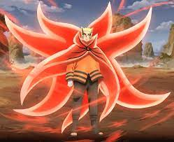

About Naruto
Naruto was a under dog who exceeded everyone's expectation. Became one of the strongest hokage, one of the strongest ninjas.
Naruto's Strongest Form To This Date
Naruto's characteristics
- He's the son of a hokage
- He's treated terrible at the beginning
- He's trying to bring peace to his village
Naruto's friends
Naruto has loyal friends. I think his bestfriend is Sasuke. He's Stoic. Click on the link below to read more about them: